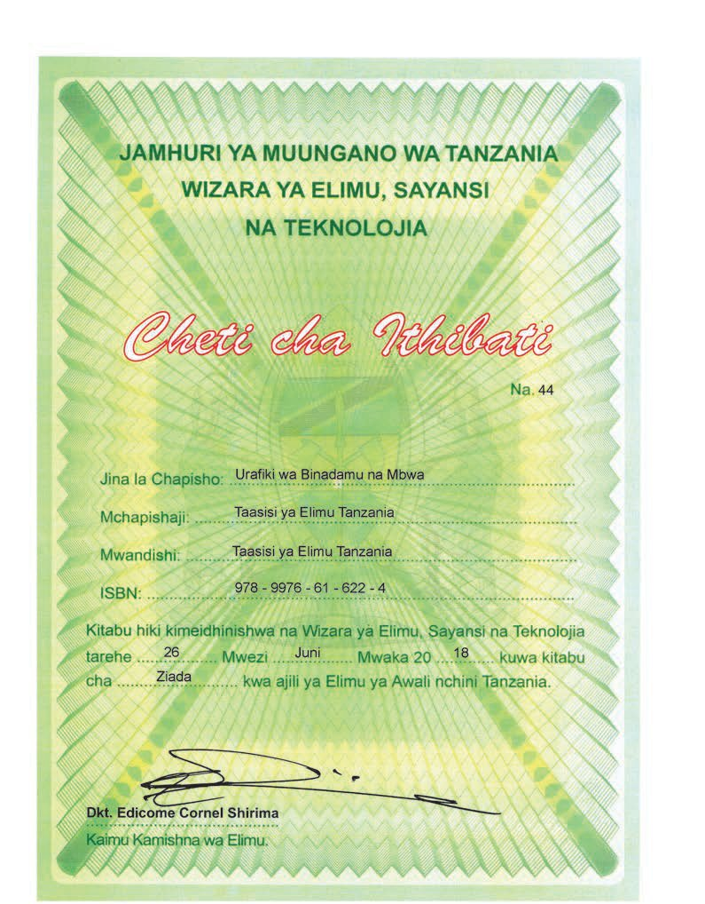

Urafiki wa Binadamu na Mbwa
JAMHURI YA MUUNGANO WA TANZANIA
WIZARA YA ELIMU, SAYANSI
NA TEKNOLOJIA
Cheti cha Ithibati
Na. 44
Jina la Chapisho
Urafiki wa Binadamu na Mbwa
Mchapishaji
Taasisi ya Elimu Tanzania
Mwandishi
Taasisi ya Elimu Tanzania
ISBN
978 - 9976 - 61 - 622 - 4
Kitabu hiki kimeidhinishwa na Wizara ya Elimu, Sayansi na Teknolojia
tarehe 26 Mwezi Juni Mwaka 20 18 kuwa kitabu cha Ziada kwa ajili ya Elimu ya Awali nchini Tanzania.
Dkt. Edicome Cornel Shirima
Kaimu Kamishna wa Elimu
Taasisi ya Elimu Tanzania